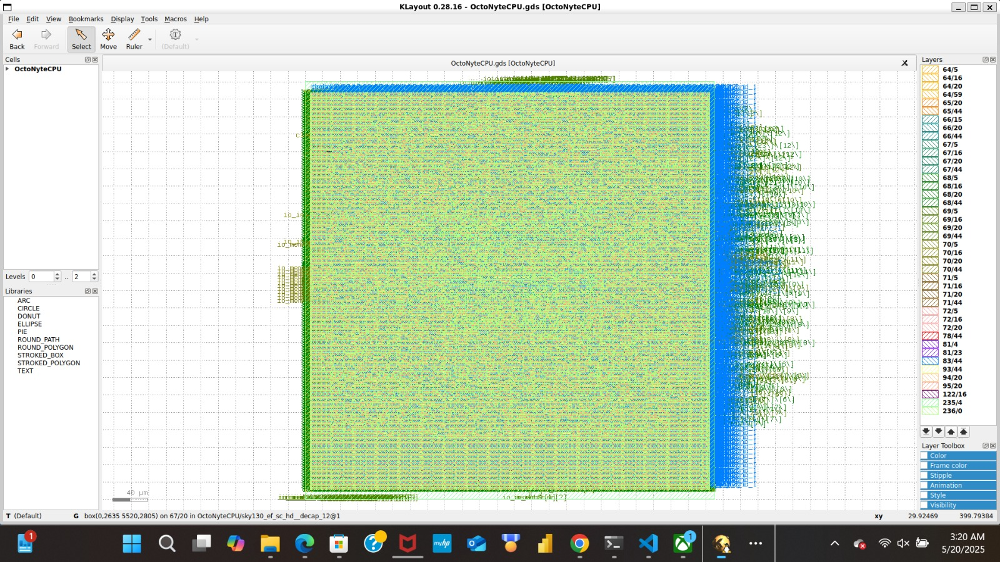

📌 Project Summary
I worked as a Physical Design Engineer responsible for place & route, floorplanning, and GDSII generation of the OctoNyteCPU. This included integrating flattened RTL, defining constraints, and optimizing layout using OpenLane 2 on the Sky130 HD PDK.
📂 Configurations
To compile the TetraNyteCoreCPU I used the following configuration before running using openlane
{
"DESIGN_NAME": "OctoNyteCPU",
"VERILOG_FILES": [
"../OctoNyte-Teja/RTL/Chisel/generators/generated/verilog_hierarchical_timed_rtl/OctoNyteCPU.v"
],
"CLOCK_PORT": "clock",
"CLOCK_PERIOD": 5,
"FP_CORE_UTIL": 30,
"FP_PDN_VPITCH": 7.0,
"FP_PDN_HPITCH": 7.0,
"PNR_SDC_FILE": "common_constraints/design.sdc",
"SIGNOFF_SDC_FILE": "common_constraints/design.sdc",
"SYNTH_READ_BLACKBOX_LIB": true
}
📊 Floorplan Report
- PDK Used: sky130_fd_sc_hd
- Site Size: 0.46 μm × 2.72 μm
- Utilization: 30%
- Rows: 168 rows × 997 sites
🔹 Area Information
| Region | Coordinates (μm) | Total Area (μm²) |
|---|
| Die Area | 0.0 0.0 → 469.785 480.505 | 225,712.67 |
| Core Area | 5.52 10.88 → 464.14 467.84 | 214,918.55 |
🔹 Cell Distribution
| Cell Type | Count | Area (μm²) |
|---|
| Buffer | 1 | 3.75 |
| Inverter | 79 | 296.53 |
| Sequential | 1120 | 23702.73 |
| Multi-input Comb. | 3862 | 39131.28 |
| Total | 5062 | 63,134.30 |
|---|
🛠️ Tools Used
- WSL Terminal:
Linux environment on Windows for running design tools easily.
- OpenLane v2:
Digital ASIC design flow for full chip implementation.
- SkyWater 130nm PDK (sky130_fd_sc_hd):
Open-source standard cell library for fabrication.
- Yosys, Magic, KLayout, Netgen:
Tools for synthesis, layout, viewing, and verification.
- Tcl scripting and Makefile-based flow:
Automates OpenLane tool steps using scripts.
🧠 Final Post-Layout Analysis (OpenLane v2 - sky130_fd_sc_hd)
⏱️ 1. Timing Summary
| Parameter | Value (nom_tt_025C_1v80) |
|---|
| Clock Name | clock |
| Period | 15.00 ns |
| Minimum Achievable Period | 8.86 ns (fmax ≈ 112.88 MHz) |
| Worst Setup Slack | 6.14 ns ✅ |
| Worst Hold Slack | 0.478 ns ✅ |
| Setup Skew | 0.242 ns |
| Hold Skew | 0.242 ns |
| Source Latency (Setup) | 0.871 ns |
| Target Latency (Setup) | 0.629 ns |
✔️ All timing checks passed. Skews and slacks are acceptable.
⚡ 2. Power Report
| Group | Internal Power | Switching | Leakage | Total | % Total |
|---|
| Sequential | 3.10 mW | 0.12 mW | ~0 nW | 3.22 mW | 47.5% |
| Combinational | 0.40 mW | 0.48 mW | ~0 nW | 0.88 mW | 13.0% |
| Clock Network | 1.33 mW | 1.35 mW | ~0 nW | 2.68 mW | 39.5% |
| Total | 6.77 mW | 100% |
🧮 3. Area Comparison
| Source | Area (µm²) | Notes |
|---|
| RTL Estimation | 50,880.05 | From synthesis report |
| Core Area (PnR) | 2,138,670.84 | From floorplan log |
| Die Area (PnR) | 2,120,935.87 | From floorplan log |
| Sequential Cell Area | 21,780.89 | ≈ 43% of RTL area |
🧱 4. Cell Type Breakdown
| Type | Count | Area (µm²) |
|---|
| Buffer | 1 | 3.75 |
| Inverter | 79 | 296.53 |
| Sequential | 1120 | 23,702.73 |
| Combinational | 3862 | 39,131.28 |
| Total | 5062 | 63,134.30 |
📉 5. Violation Summary
| Check | Status | Details |
|---|
| LVS | ✅ Passed | Layout matches schematic |
| DRC | ❌ Failed | 3 KLayout errors, 0 Magic DRC |
| Antenna | ❌ Failed | 4 pin + 4 net violations |
Inspect violations at 74-misc-reportmanufacturability/ in KLayout or Magic.
📊 6. Clock Tree Report
- Virtual clock not generated physically
- Setup/Hold skew: 0.242 ns
- Source Latency: 0.871 ns
🧰 7. Tool Resources (STA)
| Metric | Value |
|---|
| Runtime | 9.36 sec |
| CPU Peak | 109.4% |
| Memory Peak | 89 MiB |
| Threads | 1 |
✅ Conclusion
This project meets synthesis, STA, and LVS goals with good power and timing. Minor DRC/antenna issues remain to be fixed.
📂 View GDS
Below is a visual of the final layout using KLayout
